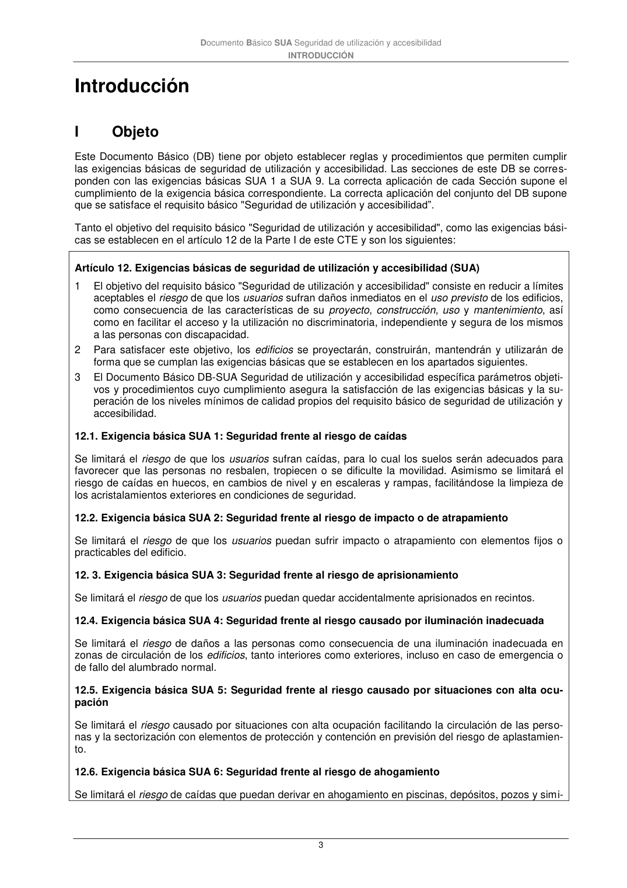

DB-SUA · Introducción · I Objeto · versión 2022-06-14
SHA256: 3cfb5bbb135e8f02faebd8b844e03e8947994c18d4c9e675a7d2aa37d1cd5958 · página física 3 de 47 · métodos de encabezado
solo si están cotejados.
Formatos: Markdown · JSON de bloques · PDF p. 3 · imagen PNG
Documento Básico SUA Seguridad de utilización y accesibilidad INTRODUCCIÓN 3 Introducción I Objeto Este Documento Básico (DB) tiene por objeto establecer reglas y procedimientos que permiten cumplir las exigencias básicas de seguridad de utilización y accesibilidad. Las secciones de este DB se corres- ponden con las exigencias básicas SUA 1 a SUA 9. La correcta aplicación de cada Sección supone el cumplimiento de la exigencia básica correspondiente. La correcta aplicación del conjunto del DB supone que se satisface el requisito básico "Seguridad de utilización y accesibilidad”. Tanto el objetivo del requisito básico "Seguridad de utilización y accesibilidad", como las exigencias bási- cas se establecen en el artículo 12 de la Parte I de este CTE y son los siguientes: Artículo 12. Exigencias básicas de seguridad de utilización y accesibilidad (SUA) 1 El objetivo del requisito básico "Seguridad de utilización y accesibilidad" consiste en reducir a límites aceptables el riesgo de que los usuarios sufran daños inmediatos en el uso previsto de los edificios, como consecuencia de las características de su proyecto, construcción, uso y mantenimiento, así como en facilitar el acceso y la utilización no discriminatoria, independiente y segura de los mismos a las personas con discapacidad. 2 Para satisfacer este objetivo, los edificios se proyectarán, construirán, mantendrán y utilizarán de forma que se cumplan las exigencias básicas que se establecen en los apartados siguientes. 3 El Documento Básico DB-SUA Seguridad de utilización y accesibilidad específica parámetros objeti- vos y procedimientos cuyo cumplimiento asegura la satisfacción de las exigencias básicas y la su- peración de los niveles mínimos de calidad propios del requisito básico de seguridad de utilización y accesibilidad. 12.1. Exigencia básica SUA 1: Seguridad frente al riesgo de caídas Se limitará el riesgo de que los usuarios sufran caídas, para lo cual los suelos serán adecuados para favorecer que las personas no resbalen, tropiecen o se dificulte la movilidad. Asimismo se limitará el riesgo de caídas en huecos, en cambios de nivel y en escaleras y rampas, facilitándose la limpieza de los acristalamientos exteriores en condiciones de seguridad. 12.2. Exigencia básica SUA 2: Seguridad frente al riesgo de impacto o de atrapamiento Se limitará el riesgo de que los usuarios puedan sufrir impacto o atrapamiento con elementos fijos o practicables del edificio. 12. 3. Exigencia básica SUA 3: Seguridad frente al riesgo de aprisionamiento Se limitará el riesgo de que los usuarios puedan quedar accidentalmente aprisionados en recintos. 12.4. Exigencia básica SUA 4: Seguridad frente al riesgo causado por iluminación inadecuada Se limitará el riesgo de daños a las personas como consecuencia de una iluminación inadecuada en zonas de circulación de los edificios, tanto interiores como exteriores, incluso en caso de emergencia o de fallo del alumbrado normal. 12.5. Exigencia básica SUA 5: Seguridad frente al riesgo causado por situaciones con alta ocu- pación Se limitará el riesgo causado por situaciones con alta ocupación facilitando la circulación de las perso- nas y la sectorización con elementos de protección y contención en previsión del riesgo de aplastamien- to. 12.6. Exigencia básica SUA 6: Seguridad frente al riesgo de ahogamiento Se limitará el riesgo de caídas que puedan derivar en ahogamiento en piscinas, depósitos, pozos y simi-
